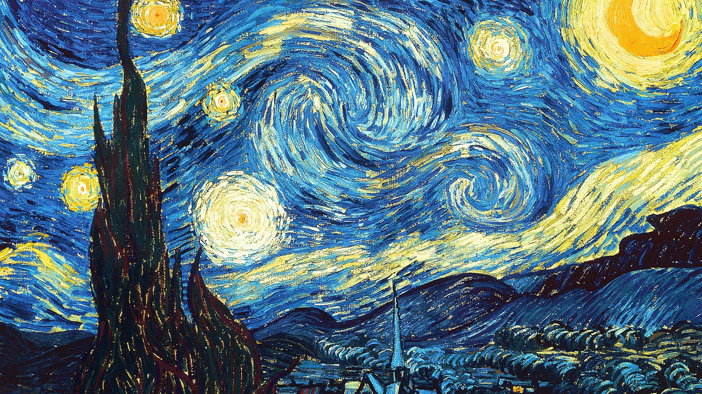

Van Gogh miraba por la ventana del sanatorio de Saint-Rémy. Ya no tenía el lóbulo de su oreja y se sentía cada vez más acosado por las alucinaciones.Cuando miraba los cipreses del jardín, éstos parecían vibrar. Cuando miraba al cielo nocturno, las estrellas parecían estar vivas. Eso es lo que captó en este lienzo que es hoy uno de los más famosos de la historia del arte.
Cuadro hecho por el gran artista Vincent van Gogh en el año 1889, es una de las mas grandes obras del arte moderno.